This page shows every way you can change a forestmap plot, with an
example of each. All the examples use the forestmap_example
data that comes with the package. Most use two study properties to keep
the plots small, but everything works the same with more.
Headings and order
Headings
Name each property to set its heading. Without a name, the column name is used:
plot_forestmap(
forestmap_example, "smd", vi = "vi",
moderators = c("Who took part" = "population", "design")
)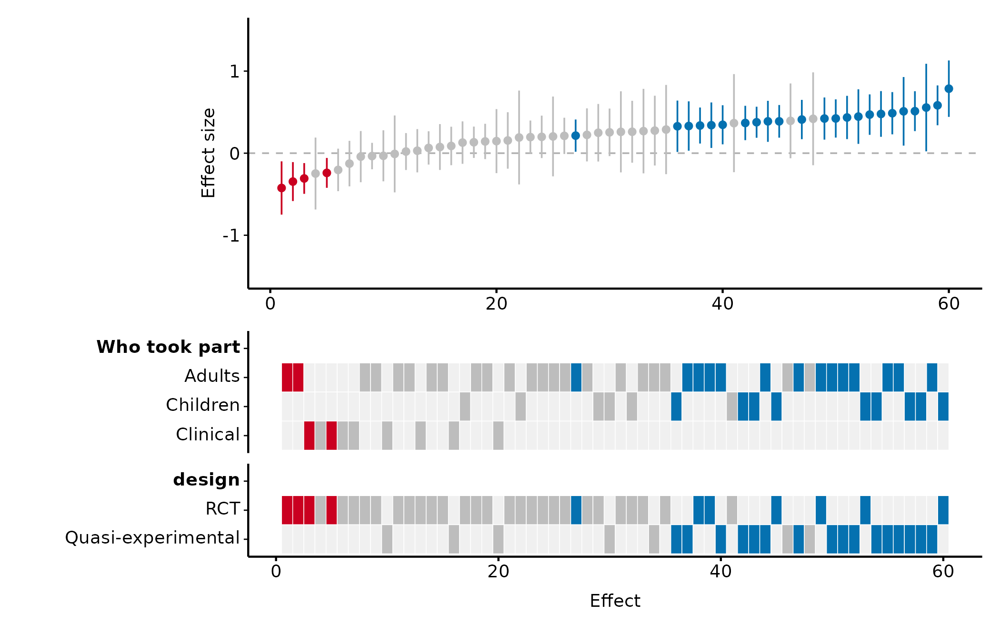
Which properties, in which order
The heatmap shows the properties you list, in the order you list them:
plot_forestmap(
forestmap_example, "smd", vi = "vi",
moderators = c("Country" = "country", "Population" = "population")
)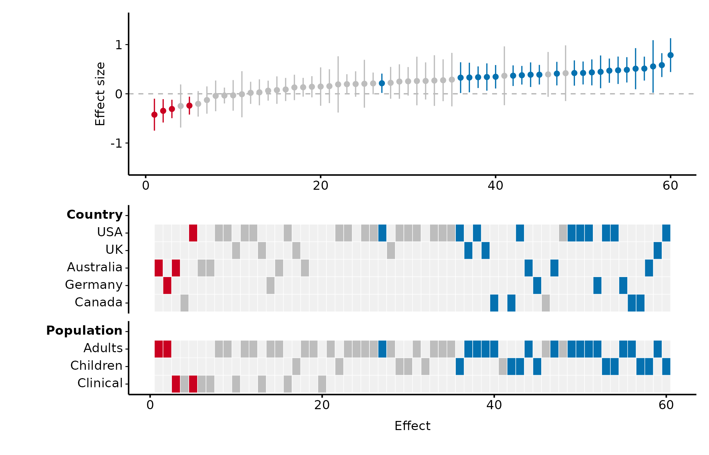
Order and names of the rows
Rows follow the order of the factor’s levels. Change the order with
factor(..., levels = ...), and rename levels with
labels = ...:
dat <- forestmap_example
dat$population <- factor(
dat$population,
levels = c("Clinical", "Children", "Adults"),
labels = c("Clinical samples", "Children (< 18)", "Adults (18+)")
)
plot_forestmap(
dat, "smd", vi = "vi",
moderators = c("Population" = "population", "Study design" = "design")
)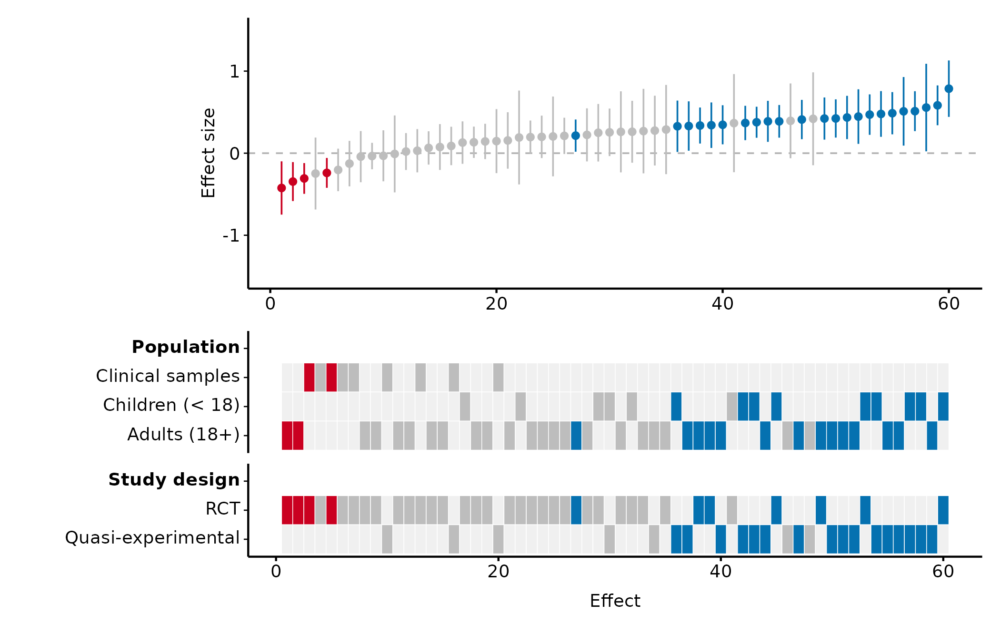
Axis titles
plot_forestmap(
forestmap_example, "smd", vi = "vi",
moderators = c("Population" = "population", "Study design" = "design"),
y_label = "Hedges' g (95% CI)",
x_label = "Studies, sorted by effect size"
)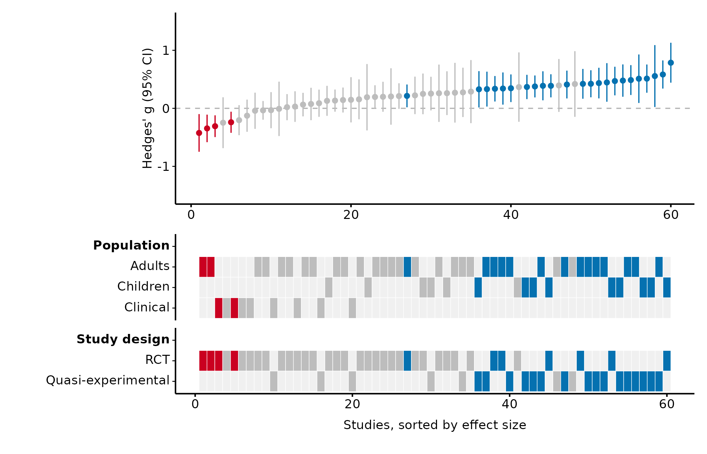
Effect size scale
Ratios: null_value
Colours depend on whether each confidence interval excludes the value
meaning “no effect”. That’s 0 for differences (and log ratios) and 1 for
ratios such as odds ratios. Odds-ratio intervals aren’t symmetric, so
give the bounds with lb and ub rather than a
variance. Here the example effects are converted to odds ratios:
odds <- forestmap_example
to_log_or <- pi / sqrt(3)
odds$or <- exp(odds$smd * to_log_or)
odds$or_lower <- exp((odds$smd - 1.96 * sqrt(odds$vi)) * to_log_or)
odds$or_upper <- exp((odds$smd + 1.96 * sqrt(odds$vi)) * to_log_or)
plot_forestmap(
odds, "or", "or_lower", "or_upper",
moderators = c("Population" = "population", "Study design" = "design"),
null_value = 1,
y_label = "Odds ratio (95% CI)"
)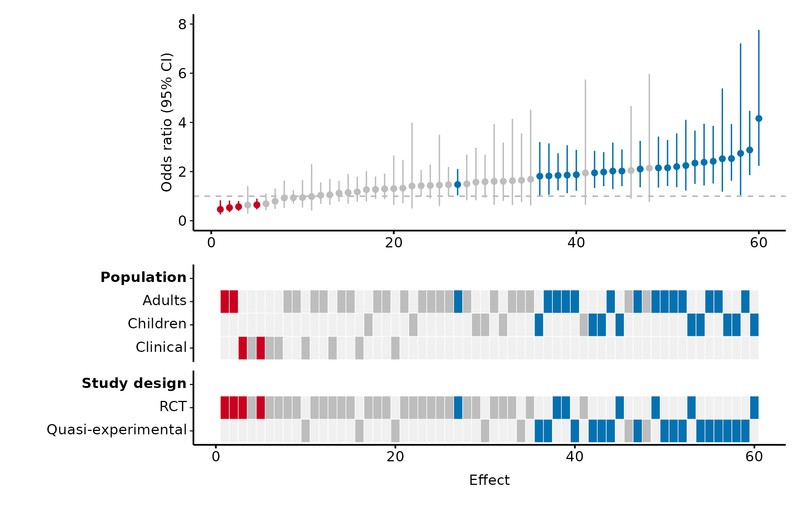
Ratios are often easier to read on the log scale: plot
log(or) with its variance (vi) and the default
null_value = 0.
Effects too small to matter: rope
rope shades a band of effects you consider too small to
matter (a “region of practical equivalence”). Give two numbers, or one
number for a band symmetric around null_value:
plot_forestmap(
forestmap_example, "smd", vi = "vi",
moderators = c("Population" = "population", "Study design" = "design"),
rope = c(-0.1, 0.1)
)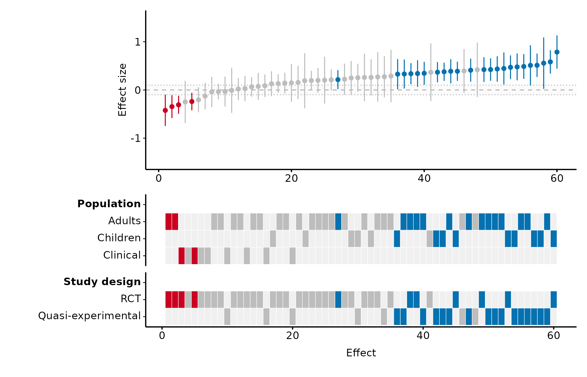
Axis range: y_limits
By default the y-axis is symmetric around null_value and
wide enough to show every confidence interval (for ratios, it starts at
0). Set your own range with y_limits; parts of intervals
outside it are cut off:
plot_forestmap(
forestmap_example, "smd", vi = "vi",
moderators = c("Population" = "population", "Study design" = "design"),
y_limits = c(-1, 1.2)
)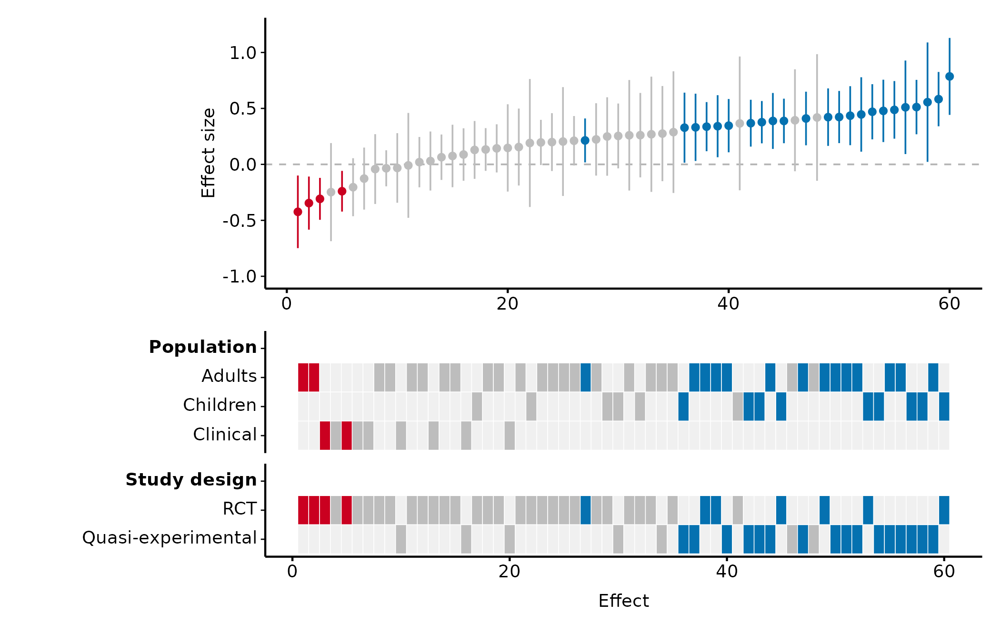
Colours
Built-in palettes
Choose a palette by name. The options are "default"
(shown in the examples above), "okabe_ito",
"viridis" and "greyscale".
"okabe_ito" uses blue and vermillion from the Okabe–Ito
palette, designed to stay distinguishable for people with common types
of colour blindness:
plot_forestmap(
forestmap_example, "smd", vi = "vi",
moderators = c("Population" = "population", "Study design" = "design"),
palette = "okabe_ito"
)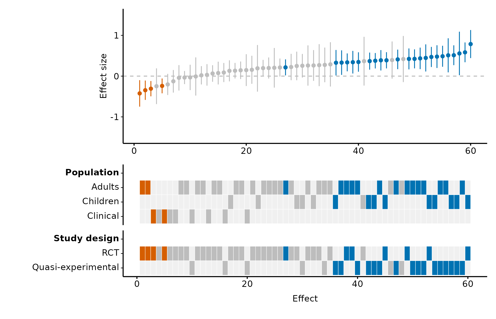
"viridis":
plot_forestmap(
forestmap_example, "smd", vi = "vi",
moderators = c("Population" = "population", "Study design" = "design"),
palette = "viridis"
)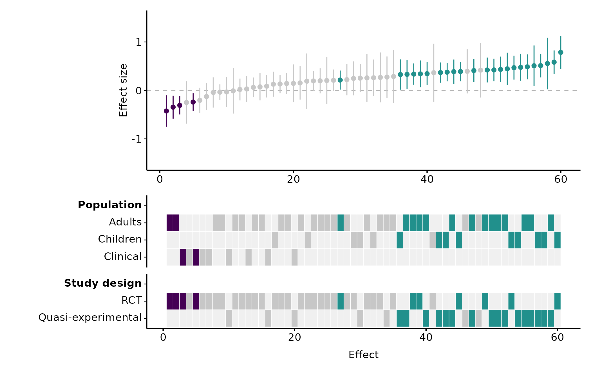
"greyscale", for black-and-white printing:
plot_forestmap(
forestmap_example, "smd", vi = "vi",
moderators = c("Population" = "population", "Study design" = "design"),
palette = "greyscale"
)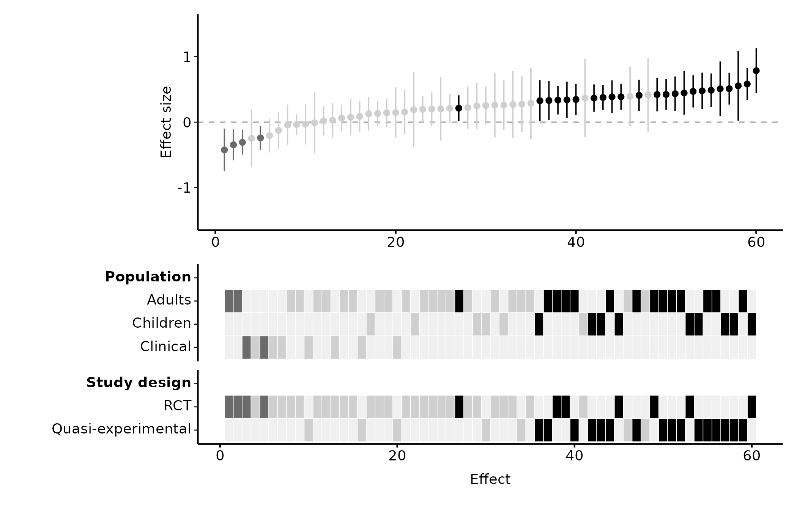
Your own colours
Give three colours: for positive effects, negative effects, and effects whose interval includes the null value. Any colour name or hex code works:
plot_forestmap(
forestmap_example, "smd", vi = "vi",
moderators = c("Population" = "population", "Study design" = "design"),
palette = c(positive = "#1b7837", negative = "#762a83", null = "grey75")
)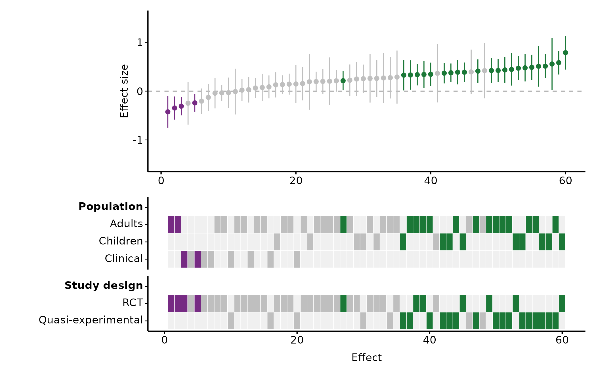
Font and text size
Font
font takes the name of any font installed on your
computer. The default is "Arial Narrow" (or a plain
sans-serif font if it isn’t installed). The generic names
"sans", "serif" and "mono" work
everywhere:
plot_forestmap(
forestmap_example, "smd", vi = "vi",
moderators = c("Population" = "population", "Study design" = "design"),
font = "serif"
)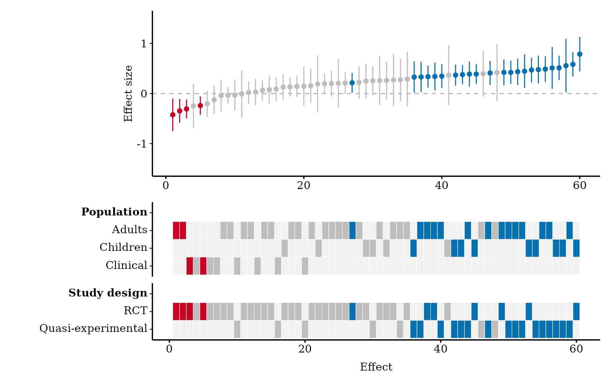
To see which fonts you have, run
systemfonts::system_fonts()$family. You can also use a font
file that isn’t installed, by giving its path:
plot_forestmap(
forestmap_example, "smd", vi = "vi",
moderators = c("Population" = "population", "Study design" = "design"),
font = "fonts/MyFont-Regular.ttf"
)Text size
text_size sets the size of all text, in points (default
9):
plot_forestmap(
forestmap_example, "smd", vi = "vi",
moderators = c("Population" = "population", "Study design" = "design"),
text_size = 12
)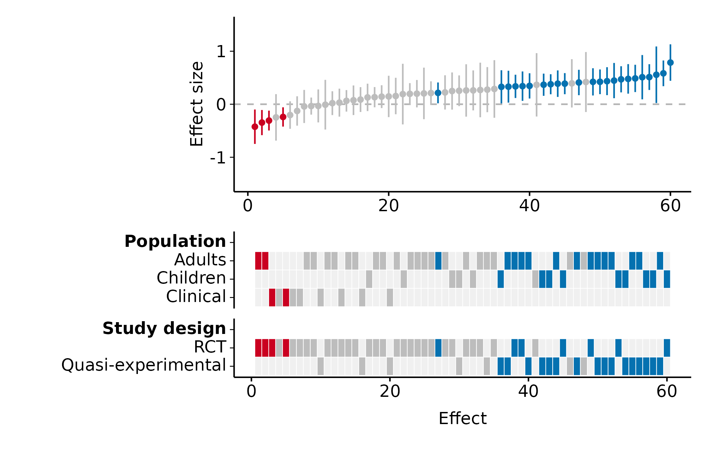
Panel heights
By default, the heatmap gets more of the plot’s height the more rows
it has. forest_height sets the forest plot’s share of the
height yourself, between 0 and 1. Here the forest plot and heatmap get
half each:
plot_forestmap(
forestmap_example, "smd", vi = "vi",
moderators = c("Population" = "population", "Study design" = "design"),
forest_height = 0.5
)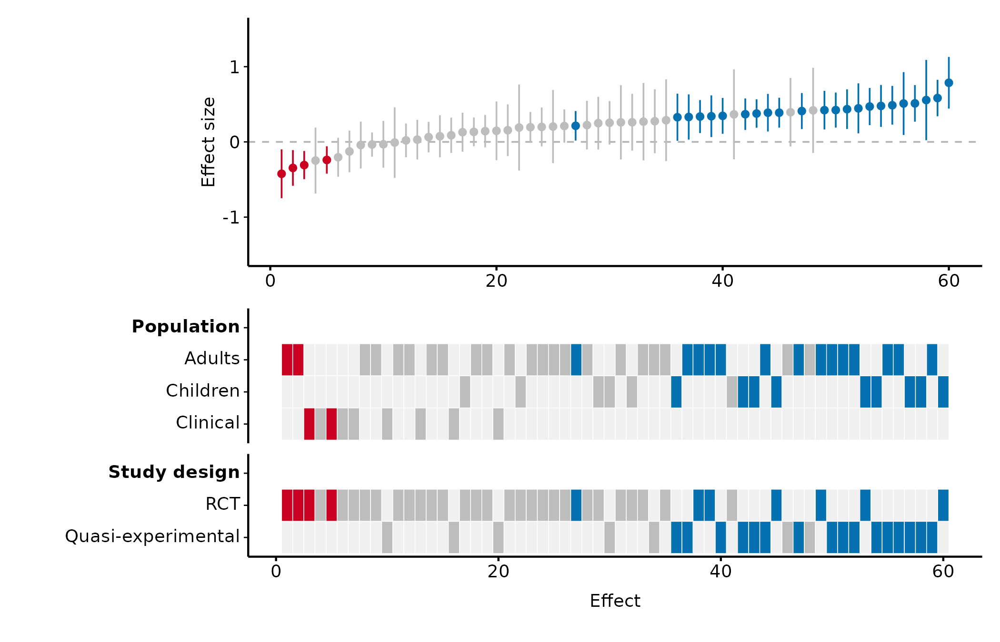
Many study properties
With many properties or levels the heatmap gets tall. Two options help.
Compact layout
layout = "compact" puts each property’s name beside its
rows instead of on a row of its own:
plot_forestmap(
forestmap_example, "smd", vi = "vi",
moderators = c(
"Population" = "population",
"Outcome measure" = "outcome",
"Study design" = "design",
"Country" = "country"
),
layout = "compact"
)
Fewer rows: max_levels
max_levels sets the most rows any property can have. The
most common levels are kept, and the rest are merged into one “Other”
row. With max_levels = 3, the five countries become USA,
Australia and Other:
plot_forestmap(
forestmap_example, "smd", vi = "vi",
moderators = c(
"Population" = "population",
"Outcome measure" = "outcome",
"Study design" = "design",
"Country" = "country"
),
layout = "compact",
max_levels = 3
)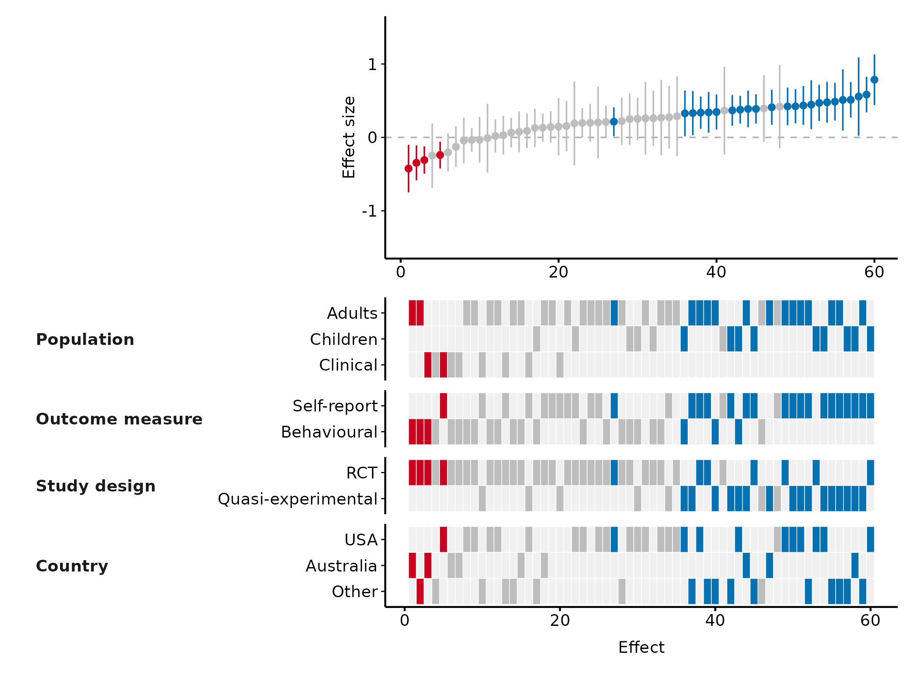
If several levels tie for the last place, all of them are kept and you get a warning saying so.
Going further with ggplot2 and patchwork
plot_forestmap() returns a patchwork of two ggplot2
plots: p[[1]] is the forest plot and p[[2]]
the heatmap. You can add to either one.
Title and caption
p <- plot_forestmap(
forestmap_example, "smd", vi = "vi",
moderators = c("Population" = "population", "Study design" = "design")
)
p + patchwork::plot_annotation(
title = "Effects of the intervention",
subtitle = "60 studies, sorted by effect size",
caption = "Simulated data"
)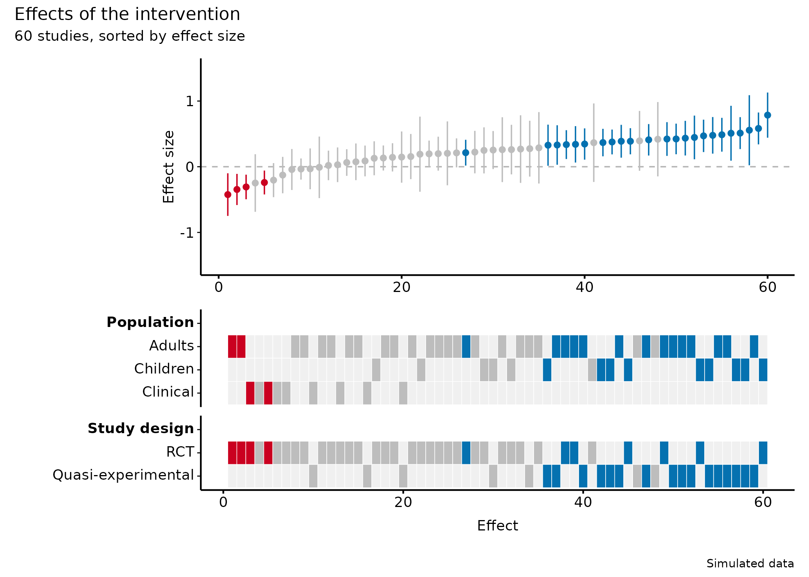
Show the pooled effect
Add a line to the forest plot, for example at the pooled effect from your meta-analysis. Here it’s a simple inverse-variance (fixed-effect) average:
pooled <- weighted.mean(forestmap_example$smd, w = 1 / forestmap_example$vi)
p <- plot_forestmap(
forestmap_example, "smd", vi = "vi",
moderators = c("Population" = "population", "Study design" = "design")
)
p[[1]] <- p[[1]] +
ggplot2::geom_hline(yintercept = pooled, colour = "black", linewidth = 0.4) +
ggplot2::annotate(
"text", x = 1, y = pooled, label = "Pooled effect",
hjust = 0, vjust = -0.6, size = 3, family = "sans"
)
p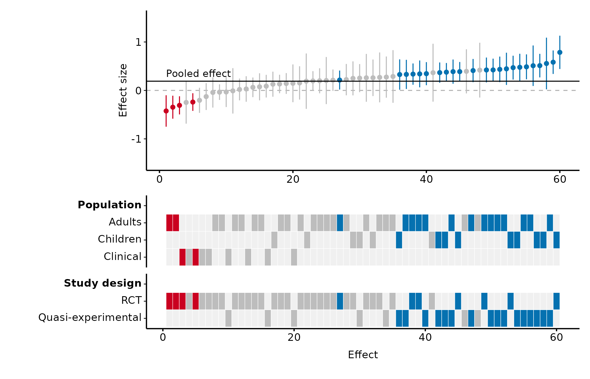
Text added with annotate() doesn’t pick up the plot’s
font automatically, so set family to the same font you gave
plot_forestmap().
Axis breaks
Change where the y-axis labels go with
scale_y_continuous(). Use round numbers; seq()
can create tiny rounding errors that show up as odd labels:
p <- plot_forestmap(
forestmap_example, "smd", vi = "vi",
moderators = c("Population" = "population", "Study design" = "design")
)
p[[1]] <- p[[1]] + ggplot2::scale_y_continuous(breaks = c(-1, -0.5, 0, 0.5, 1))
pSaving
plot_forestmap() doesn’t save anything; use
ggplot2::ggsave() and choose the size there. The plot looks
best at around 7 × 5 inches with four properties; add height as you add
rows.
ggplot2::ggsave("forestmap.png", p, width = 7, height = 5.25, dpi = 300)
ggplot2::ggsave("forestmap.svg", p, width = 7, height = 5.25)
ggplot2::ggsave("forestmap.pdf", p, width = 7, height = 5.25, device = cairo_pdf)For PDFs, device = cairo_pdf makes sure fonts such as
Arial Narrow work.